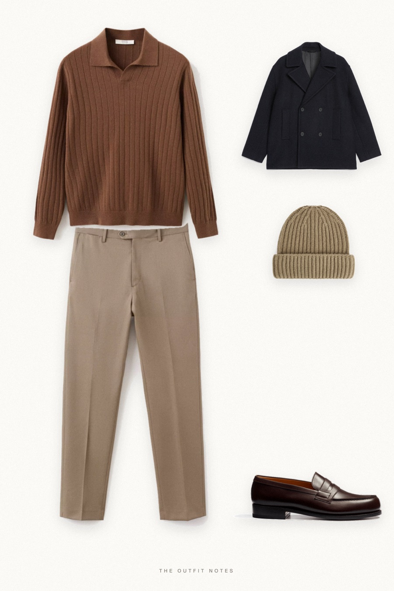

Harbour Brown
pea coat and cashmere

Old money winter outfit for men by the sea: a navy wool-blend pea coat over a brown cashmere polo, beige virgin wool pleated trousers, J.M. Weston moccasins and a ribbed beige beanie. Quiet luxury layering for coastal weekends, with texture instead of logos.
The pieces
This page contains affiliate links: if you buy through them, we may earn a commission at no extra cost to you. Disclosure.
 ARKET
ARKET
Navy wool pea coat
Shop Mango
Mango
Brown cashmere polo sweater
Shop Mango
Mango
Stone pleated wool trousers
Shop![J.M. Weston Mocassin 180 [homme cuir lisse marron mélèze]](../../img/products/jm-weston-180-moccasin-marron-meleze.jpg) J.M. Weston
J.M. Weston
Brown penny loafers
Shop ARKET
ARKET
Beige ribbed wool beanie
Shop
Prices are indicative, taken when the look was published, and may have changed. Pictures of the outfit are AI-generated illustrations of real products; the product photos are the retailers' own.
Published 1 October 2026.